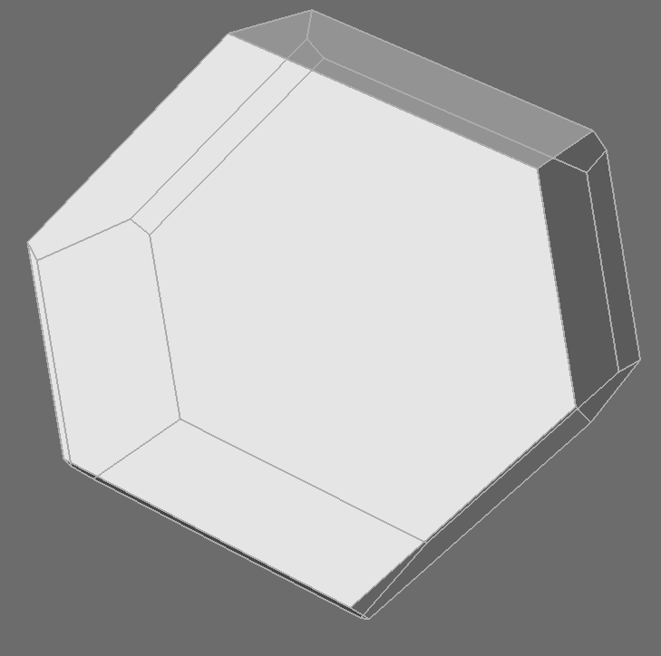

Designing Plesiohedra
A plesiohedron, defined as the Voronoi cell of a symmetric Delone set, is by construction a polyhedron that tesselates space isohedrally, with each cell translationally symmetric to every other. I parametrized this definition in Grasshopper design software, allowing me to sample arbitrary points from the phase space and even construct continuous trajectories through it. The animation shown here visualizes a point moving along such a path through the phase space. As such, if you were to freeze the animation, no matter what frame it stopped on, the polyhedron depicted would tile all of space. This method is far from generating all possible polyhedra that can tile space, nor is the construction from a Delone set necessarily the only way to tile any particular plesiohedron. Take bricks, for example, which, when they are stacked in alternating rows, contain instances of exactly two edges meeting, unlike the Voronoi diagram of a Delone set whose edges always meet in three or more. A point of further research will be aperiodic Delone sets, concave stereohedra, and exotic constructions of symmetric Delone sets.

An assembly of space-filling plesiohedra
A continuous walk through the parameter space of plesiohedra